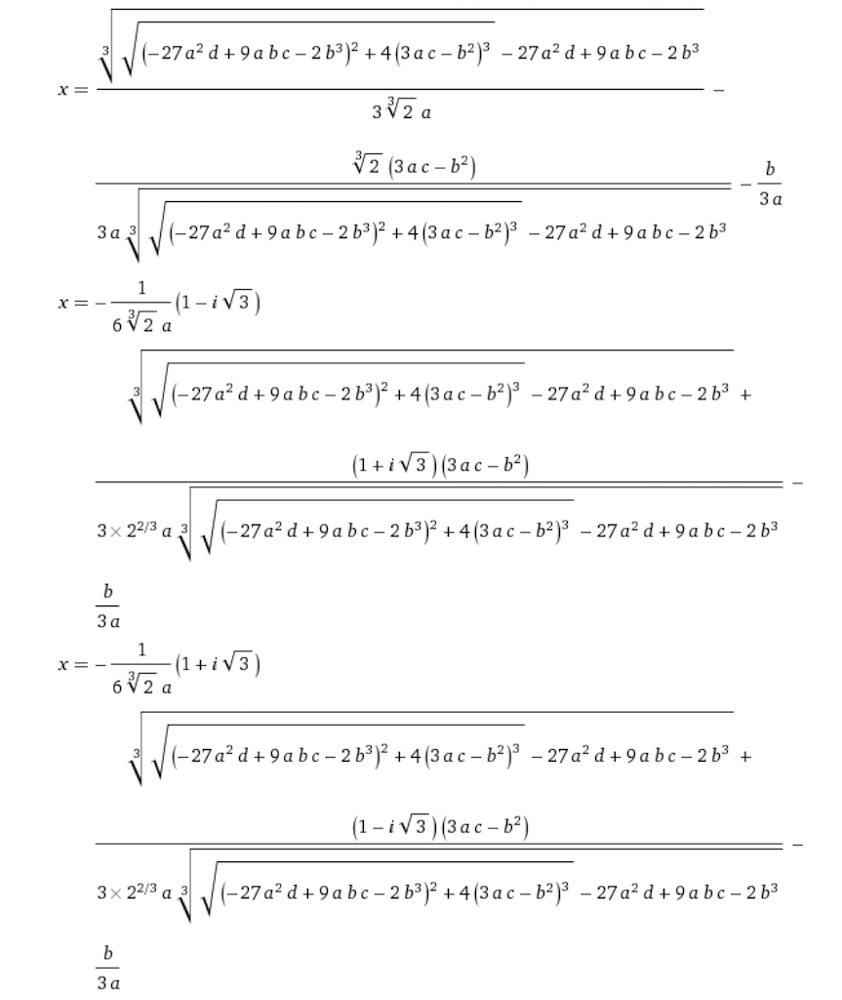

#4 ω 〜1の3乗根〜
方程式を解く
最終更新日：22.2.1

はじめに
高次方程式の話をするにあたって、最初にどうしても皆さんに伝えなければいけないことがあります。
それは、私たちが高校で扱うのは解ける方程式、それも、運よく2次以下に因数分解できる、ものすごく恵まれた、レアな方程式であるということです。
これから高次方程式の解き方をみていきますが、要は因数定理を使って因数分解して、あとは場合によっては2次方程式の解の公式を使うだけの単純な作業です。
解の公式
2次方程式の解の公式は習いました。
$ax^2+bx+c=0$ の解は、
$$
x=\dfrac{-b\pm\sqrt{b^2-4ac}}{2a}
$$
これも最初は覚えるのに苦労したかもしれませんが、今ではちゃんと染み付いていると思います（そうだよね？）
実は、3次方程式にも解の公式が存在します。
え、あるの？ だったら早く教えてよ！ そんな声が聞こえてきますね（幻聴）。
解の公式があるなら、わざわざ $\pm\dfrac{\text{定数項の約数}}{\text{最高次係数の約数}}$ を調べなくてもいいじゃないですか。そんな便利なものを教えないとは、先生はなんてケチなんだ！
それでは、その「便利なもの」を今から皆さんにお見せしましょう。
3次方程式 $ax^3+bx^2+cx+d$ の3つの解は、

で表される。
[1]
はい。そういうことです。
こんなのを計算するくらいなら、 $\pm\dfrac{\text{定数項の約数}}{\text{最高次係数の約数}}$ を一つ一つ代入して因数を見つけるほうがはるかにましです。しかも、何度も言うようですが、幸運なことに高校では「因数分解できる高次方程式」しか扱えません。
広い世界では、方程式が因数分解できること自体が奇跡です。
そのことを心に留め、私たちの扱う方程式が因数分解できることに感謝しつつ、気負わずにいきましょう。
あえて数学嫌いが進行するようなものを見せたのは、これに比べれば高校の高次方程式なんぞ大したことはないと気づいてほしかったからです。
高次方程式を因数分解で解く
やることは簡単です。3次以上の方程式が与えられたら、左辺を因数分解して2次以下の形にするだけです。
例1
$x^3-3x^2-16x+48=0$ を解け。
左辺を $P(x)$ とおくと、代入によって $P(3)=0$ がわかりますから、前回のように因数分解して
$$
P(x)=(x-3)(x-4)(x+4)
$$
したがって
$$
x=-4,3,4
$$
を得ます。
ここで気づいてほしいのは、いま左辺を因数分解するために $P(\alpha)=0$ となるような $\alpha$ を探しましたが、これは3つある解のうちの1つですね。
つまり、3次方程式の3つの解を求めたければ、1個の解は何とか自力で見つけないといけないということです。 [2] 逆に言えば1つ見つけてしまえば残り2つは必ず求められます。方程式の解と因数分解は切っても切れない関係にあるのですね。
どっかの本でこのことを「ニワトリとタマゴの関係」と言っているのを見た。
2重解と3重解
もう一つ例を見ましょう。
例2
$$
x^3-3x^2+4=0
$$
一つの解 $x=-1$ を見つけて、左辺を因数分解すると
$$
(x+1)(x+2)^2 = 0
$$
ですから、解は
$$
x=-2, -1
$$
この場合の解 $x=-2$ を「2重解」と呼びます。これは $(x+2)^2=0$ を解いて出てきたものでした。
2重解があれば3重解というのもありそうですね。
例3
$$
x^3-3x+3x-1 = 0
$$
3乗の展開公式から、一発で
$$
x^3-3x+3x-1 = (x-1)^3
$$
を見抜きたいところですが、覚えていなかった場合にも、 $x=1$ が解の一つであることに気づけば
$$\begin{aligned}
(x-1)(x^2-2x+1) &= 0 \\
(x-1)(x-1)^2 &= 0 \\
(x-1)^3 &= 0
\end{aligned}$$
となるので、解は
$$
x=1
$$
だけでした。
これを3重解と呼ぶのは言うまでもありません。
虚数解の場合
虚数解が出る場合も見ておきましょう
例4
$$
x^4-x^3-2x^2+6x-4 = 0
$$
$x=1$ はこの解ですから、左辺を $(x-1)$ で割ります。これはおとなしく割り算しましょう。
他の解は、 $x^3-2x+4$ を解けば求められることがわかりました。まだ3次式なので、もっと因数分解できるはずです。試してみると $x=-2$ が見つかりますから、
$$\begin{aligned}
x^3-2x+4 &= 0 \\
(x+2)(x^2-2x+2) &= 0 \\
\end{aligned}$$
あと2つの解は、2次方程式 $x^2-2x+2=0$ を解いて、
$$
x=1\pm i
$$
です。
まとめると、解は
$$\boldsymbol{
x = -2, 1, 1\pm i
}$$
となります。
まとめ
- 高校では因数分解できる高次方程式しか扱わないが、実際にはそうではない。
- 高次方程式は、2次以下の式に因数分解することで解けることがある。
- 因数分解して $\left(x-\bigcirc\right)^2$ という形が出てくるとき、 $x=\bigcirc$ を2重解という。
- 同様に、 $\left(x-\bigcirc\right)^3$ から得られる解を3重解と呼ぶ。
確認問題
準備中。体系問題集の152〜154を、＊だけと言わず全部やるとよい。
次回予告
ちょっと冒頭私の趣味が出てしまいましたが、広い世界では「方程式がいつもうまく解けるわけではない」ことが伝わったと思います。次回は「1の3乗根」の興味深い（しかし、実は当たり前の）性質を追っていきます。
アンケート
全て任意回答です。一つだけでも答えてくれると嬉しい